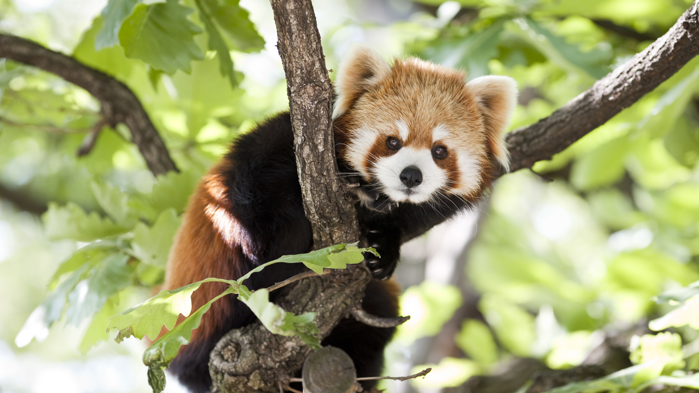
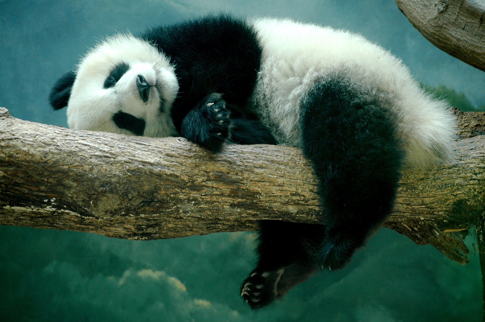
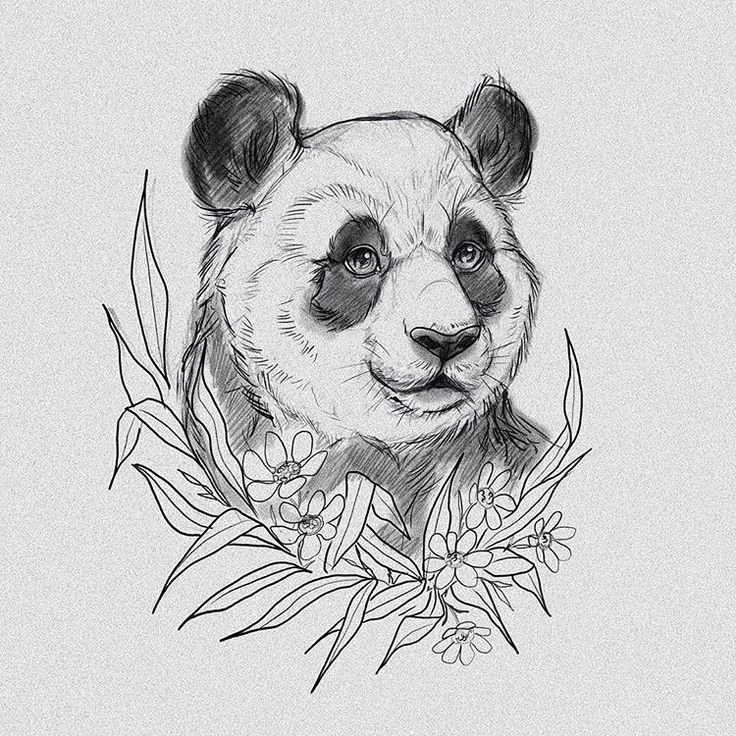
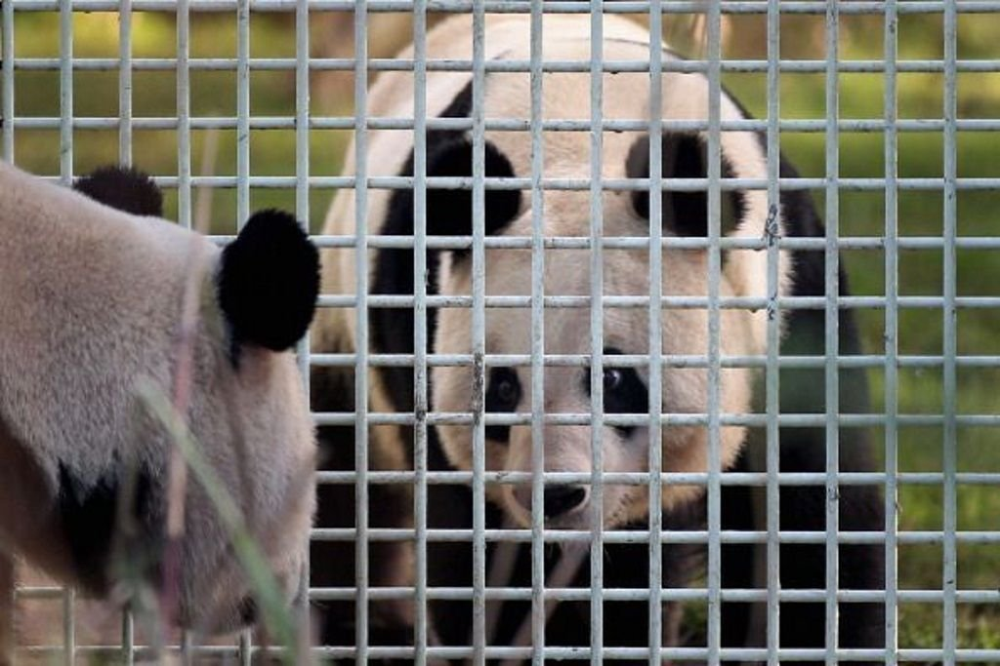
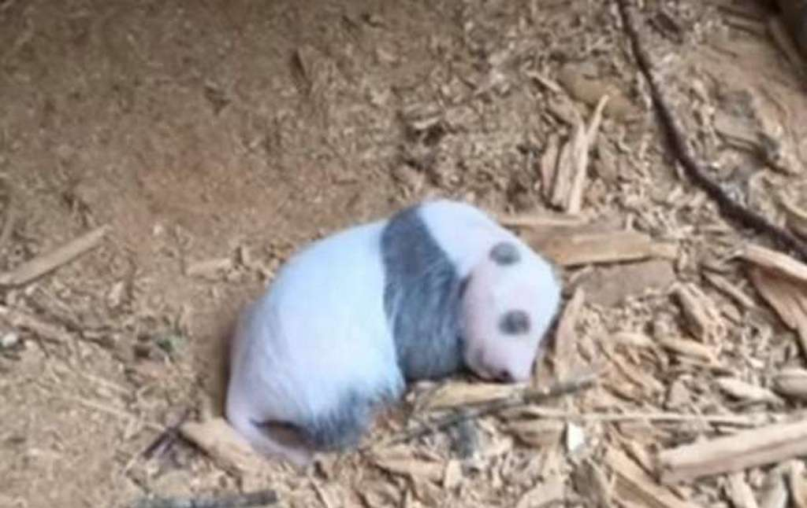

Красная и большая панда - родственники или нет?
Многие не считают красную панду пандой. Другие думают, что она очень близка в классификации с большой пандой. Кто же все-таки прав?
5 часов назадК какому виду относится панда: разновидности панд.
Панда известна всем своем ярким запоминающимся видом, однако очень немного тех, кто знает, к какому виду животных относится та или иная панда.
7 дней назадПанда как символ в искусстве, поэзии и психологии
Панда не просто является редким животным. Она с древности имеет особый, сакральный статус и в силу этого стала многоплановым символом
4 дня назадЭдинбургский зоопарк и его панды
Эдинбургский зоопарк является уникальным некоммерческим зоологическим парком, который считается одной из наиболее посещаемых достопримечательностей не только Шотландии, но и всей Великобритании.
10 дней назадНеслыханное событие!
В китайской провинции Сычуань произошло неслыханное событие: китайские зоологи обнаружили живого детеныша большой панды едва ли ни у себя под ногами. Это первый случай в истории, когда детеныш бамбукового медведя обнаруживается таким образом.
14 дней назад